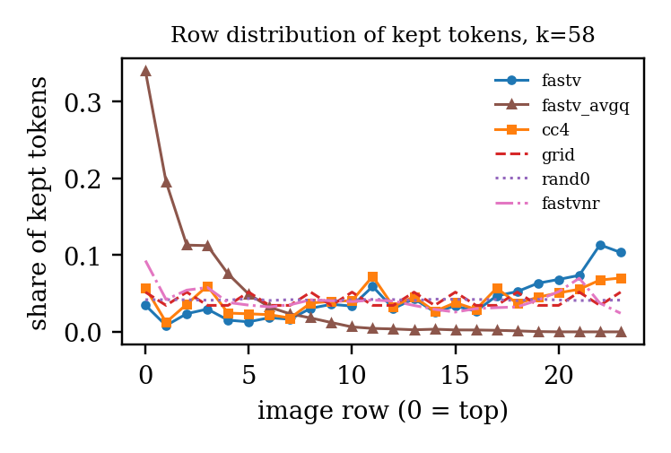

v1.0-submission)Motivation. In LLaVA-1.5 a 336×336 image is encoded by CLIP ViT-L/14 into a 24×24 grid of patch features, projected into 576 tokens that are prepended to a prompt of typically 60–150 text tokens. Image tokens are therefore the large majority of the prefill sequence, and the prefill cost (and the KV-cache memory) grows with them. FastV [1] observed that, after the first two layers, image tokens receive a very small share of attention and proposed to drop the least-attended ones at a chosen layer K. The method is attractive because it is training-free and plug-and-play, and it became the reference baseline of an entire sub-field [2–7].
The gap. The ranking signal FastV uses at K=2 is the attention paid by the last prompt token to each image token. Two later studies [5, 6] report that this signal is confounded by position: with rotary position embeddings (RoPE) [13] attention decays with relative distance, and because image tokens are flattened in raster order, tokens from the bottom of the image are closest to the text and are preferentially kept. If this is true, aggressive pruning (75–95%) leaves whole regions of the image unrepresented in the deep layers, independently of the question. FEATHER [5] addressed this with a combination of RoPE-free scoring, uniform sampling and multi-stage pruning; I study a narrower question that isolates the coverage part of that idea inside FastV's own single-stage setting.
Contributions. (i) A survey and a seven-field comparison matrix of seven papers on visual token reduction (§2). (ii) An independent, attributed re-implementation of FastV for Hugging Face transformers, checked against the model's own forward pass, and a reproduction of the A-OKVQA result for LLaVA-1.5-7B with all deviations listed (§3–4). (iii) A coverage-constrained variant (CC-FastV) evaluated against FastV under identical budgets, with attention-free controls (random, uniform grid), a constraint-strength ablation (2×2 vs 4×4 blocks), a test of the ranking criterion described in the paper text versus the one in the released code, and spatial diagnostics of what each rule keeps (§5–7). Throughout, AUTHORS marks claims reported by other papers, MEASURED marks numbers I measured (each traceable to a file in the repository), and INTERPRETATION marks my own reasoning.
I started from the FastV paper [1] and its official repository, then followed (a) its references backwards to the vision-transformer token-reduction work it builds on (EViT [9], ToMe [10]) and to the LLM attention-sink literature [12]; (b) forward citations, using arXiv and Google Scholar queries such as “visual token pruning LVLM”, “training-free token reduction LLaVA”, “FastV random baseline” and “position bias token pruning”; and (c) the comparison tables of the retrieved papers, which name the de-facto standard baselines. Inclusion criteria were: training-free or optional-training methods for LVLM visual tokens, evaluated on LLaVA-1.5 or a close relative, with public code or a clearly specified algorithm, published at a peer-reviewed venue (or, for analysis papers, widely cited). I selected seven papers for in-depth analysis that span the three design axes of the field (where to prune, which signal to use, and how many stages), plus two critical analysis papers that directly motivate my experiment. Every cited paper was opened and its arXiv identifier, title, authors and venue line were checked; facts in the matrix come from the papers' own text.
Token reduction in vision transformers (2021–2023). The idea that not all patches matter predates LVLMs. EViT [9] (ICLR 2022) keeps the patches most attended by the [CLS] token and fuses the rest into one token; ToMe [10] (ICLR 2023) merges similar tokens with bipartite matching without retraining. Both operate inside a vision encoder with a classification objective and a [CLS] token whose attention is a meaningful importance signal.
The LVLM setting (2023–). LLaVA-style models [8] connect a frozen CLIP encoder to a decoder-only LLM through a projector; the image becomes a long sequence of “soft” tokens. FastV [1] (ECCV 2024, oral) was among the first to show that these tokens are highly redundant inside the LLM, and that a single attention-ranked cut after layer 2 costs little. Three families followed. (a) Pruning inside the LLM with text-guided attention: SparseVLM [2] (ICML 2025) rates visual tokens with a selected subset of relevant text tokens, chooses per-layer sparsity adaptively and recycles pruned tokens; PyramidDrop [3] (CVPR 2025) drops tokens progressively over several stages, motivated by the finding that redundancy increases with depth. (b) Pruning before the LLM with visual signals: LLaVA-PruMerge [11] and VisionZip [4] (CVPR 2025) use the vision encoder's [CLS] attention to keep “dominant” tokens and merge the rest into a few contextual tokens; VisPruner [14] argues that text-visual attention is not a reliable importance indicator and combines visual attention with similarity-based de-duplication. (c) Diversity and coverage: DivPrune [7] (CVPR 2025) casts selection as a max–min diversity problem in feature space. (d) Critical re-examinations: Wen et al. [6] (ACL Findings 2025) show that random selection and simple pooling beat FastV and SparseVLM on many benchmarks, and identify position bias in attention-based scores; FEATHER [5] (ICCV 2025) traces the bias to RoPE's long-term decay and shows that early pruning silently destroys localization ability while common benchmarks barely notice.
For a decoder layer with heads h=1..H, the attention of query i to key j is Aij(h) = softmaxj≤i(qiTkj/√d). With RoPE, q and k are rotated by angles proportional to their positions, so the logit depends on content and on the relative distance i−j; RoFormer [13] shows an upper bound on this interaction that decays with distance. LLMs also develop attention sinks [12]: the first tokens (here the system prompt) absorb most attention regardless of content. FastV's “inefficient attention” statistic (image tokens receive about 0.21% of the attention that system-prompt tokens receive in deep layers AUTHORS [1]) is a manifestation of these two effects. The cost model used throughout the area counts per-layer FLOPs as 4nd2+2n2d+2ndm for n tokens, hidden size d and FFN size m [1]; Wen et al. [6] caution that FLOPs and token counts are unreliable proxies for wall-clock latency, which also depends on kernels (e.g. FlashAttention cannot return attention scores) and memory traffic.
Almost every paper in this area uses LLaVA-1.5-7B as the reference testbed, reports results at 192, 128 and 64 retained tokens (or the corresponding ratios), and evaluates on a common suite: GQA, MMBench, MME, POPE, ScienceQA-IMG, VQAv2, TextVQA, SEED-Bench, MM-Vet and VizWiz [2–7]. FastV itself used captioning (NoCaps, Flickr30k), A-OKVQA multiple choice [15], MMMU, PCA-Bench, OCR-VQA and video QA [1]. The standard baselines are FastV, SparseVLM, PDrop, LLaVA-PruMerge, ToMe and, after [6], random selection and pooling. As of the papers I reviewed, the strongest training-free results at very low budgets are claimed by encoder-side or diversity-based methods (VisionZip, DivPrune, VisPruner) rather than by in-LLM attention ranking AUTHORS. Two methodological caveats recur: benchmarks dominated by coarse or language-answerable questions under-detect visual information loss [5, 6], and claimed speed-ups are often theoretical.
The core papers appear at computer-vision venues (CVPR: VisionZip, PyramidDrop, DivPrune; ICCV: FEATHER, LLaVA-PruMerge; ECCV: FastV), machine-learning venues (ICML: SparseVLM; ICLR: EViT, ToMe, StreamingLLM; NeurIPS Datasets & Benchmarks: MME [16]) and NLP venues (ACL Findings: Wen et al.). Pre-prints on arXiv usually precede publication by months, and most methods release code on GitHub built on the LLaVA codebase.
Table 1 analyses seven papers along the seven required fields. Statements are the authors' claims AUTHORS unless written as an assessment; the “limitations and connections” column contains my interpretation INTERPRETATION.
| Paper | Question & contribution | Modalities & assumptions | Mechanism & objective | Data & protocol |
|---|---|---|---|---|
| FastV [1] ECCV 2024 | Image tokens get little attention after layer 2; prune them inside the LLM. New: first plug-and-play in-LLM visual token pruning for LVLMs, plus the “inefficient visual attention” analysis. | Image/video + text at inference only; no training. Needs attention probabilities at layer K−1 (eager attention for that layer). | At layer K, rank image tokens by head-averaged attention (code: from the last token; paper text: average received), drop the lowest R%. No new objective; frozen next-token model. | NoCaps, Flickr30k (CIDEr), A-OKVQA val MC, MMMU dev, PCA-Bench, OCR-VQA, MME, SEED, MM-Vet, SciQA-IMG, AI2D, TGIF/MSVD/MSRVTT; greedy decoding. |
| SparseVLM [2] ICML 2025 | Visual tokens should be rated by the text that needs them. New: text “raters”, adaptive per-layer sparsity via matrix rank, token recycling. | Image/video + text; training-free. Assumes the question contains relevance information. | Self-attention between selected text tokens and visual tokens scores tokens over several layers; pruned tokens are compressed (recycled) rather than discarded. | GQA, MMBench, MME, POPE, SQA, VQAv2, TextVQA, SEED, MM-Vet; LLaVA-1.5, Mini-Gemini, Qwen(2)-VL, video models. |
| PyramidDrop [3] CVPR 2025 | All tokens are needed in shallow layers, redundancy grows with depth. New: multi-stage “pyramid” dropping for both training and inference. | Image + text; can be used training-free or during instruction tuning (requires re-training). | Partition the LLM into stages; at each stage end drop a fixed fraction (default λ=0.5) of image tokens ranked by their attention with the last instruction token. | GQA, MMBench, MME, POPE, SEED, SQA, TextVQA, VizWiz and others; LLaVA-1.5 and LLaVA-NeXT. |
| VisionZip [4] CVPR 2025 | Redundancy originates in the vision encoder. New: select “dominant” tokens by encoder attention and merge the rest into “contextual” tokens before the LLM. | Image/video + text; text-agnostic; optional 30-min projector fine-tune (8×A800). | [CLS]-attention ranking in CLIP plus similarity-based merging; no objective unless the projector is tuned with the original LLaVA loss. | GQA, MMBench, MME, POPE, SQA, VQAv2, TextVQA, MM-Vet, SEED, VizWiz; LLaVA-1.5, LLaVA-NeXT, Mini-Gemini, Qwen-VL. |
| FEATHER [5] ICCV 2025 | Does early in-LLM pruning actually keep the right tokens? New: shows a RoPE-induced bottom-of-image bias and a localization collapse; proposes FEATHER. | Image + text; training-free; studies LLaVA-style models. | φ-R (attention scores computed without RoPE), uniform sampling with fixed stride for coverage, and multi-stage pruning. | VQAv2, GQA, VizWiz, POPE, TallyQA, VSR, AI2D, TextVQA and RefCOCO localization; chi-square test of kept-token positions. |
| Wen et al. [6] ACL Findings 2025 | Are we solving the right problem? Systematic re-examination of token pruning; no new method as main contribution. | Image + text; training-free analysis on LLaVA-1.5 and Qwen2-VL family. | Compares FastV/SparseVLM with random selection and pooling (pooling applied at layer 2); probes position bias, language guidance, importance vs. duplication. | GQA, MMBench(-CN), MME, POPE, SQA, VQAv2, TextVQA, VizWiz, RefCOCO at 75% and 87.5% pruning. |
| DivPrune [7] CVPR 2025 | Importance scores keep redundant tokens. New: formulate pruning as a Max–Min Diversity Problem in feature space. | Image/video + text; training-free; no attention needed (FlashAttention-compatible). | Max–min diversity selection over visual token embeddings, by default before the first decoder layer (“layer 0”). | 16 image and video datasets incl. GQA, MMBench, MME, POPE, SQA, VQAv2, TextVQA, SEED, VizWiz; several LMMs. |
| Paper | Baselines & evidence | Resources & reproducibility | Limitations & connections INTERP. |
|---|---|---|---|
| FastV [1] | Compared with vanilla model, random dropping at K=0, training with pooled tokens, pruning system/instruction tokens and StreamingLLM. The random-vs-attention ablation is shown only for R=50% on a retrained model; no random control at K=2 for the high ratios where differences would show. | Code public (LLaVA fork + modified transformers); public checkpoints; latency on one A40. The released A-OKVQA script loads the model in 4-bit and ranks by the last token's attention, while the paper describes average received attention. | Single-layer cut; ranking confounded by RoPE distance [5, 6]; needs attention weights (not FlashAttention-friendly); “inplace” version without KV cache. Starting point that all other rows compare against. |
| SparseVLM [2] | Beats ToMe, FastV and PDrop at equal token counts in the authors' tables; ablations on raters, adaptive sparsity and recycling. | Code public; efficiency analysis on one A100-80GB; reports FLOPs, CUDA latency and memory. | Still attention-based, so subject to the same position bias; Wen et al. [6] find random selection competitive with it. Text guidance helps only when the question carries location/object cues. |
| PyramidDrop [3] | Compared with FastV, SparseVLM and training-time pooling; layer-wise redundancy analysis supports the staged design. | Code public; 8×A100-80GB; cost analysis accounts for FlashAttention. | Ratios fixed a priori; ranking signal similar to FastV. Its finding that shallow layers need all tokens supports FastV's choice of K≥2. |
| VisionZip [4] | Outperforms FastV and SparseVLM, keeping about 95% of performance with 10% of the tokens across 11 benchmarks on LLaVA-1.5; analysis of attention concentration in CLIP. | Code public; tuning on 8×A800 (also feasible on 3090s). | Text-agnostic: cannot adapt to the question, so small question-relevant details can be lost. Moves the problem out of the LLM, avoiding RoPE bias by construction. |
| FEATHER [5] | Controlled criteria comparison (original, -R, uniform, KNN, ensembles) at matched savings; quantifies the bias (mean kept-token position 80.7% of the way down at R=0.75, K=3). | Project page released (arXiv record); the paper text names no code repository. | Closest to my work: it already combines attention with uniform sampling. My experiment isolates a coverage constraint on FastV's own ranking at FastV's single cut, without removing RoPE or adding stages. |
| Wen et al. [6] | Random and pooling outperform FastV and SparseVLM on most benchmarks by a clear margin; analyses of position bias and of FLOPs vs. latency. | Analysis on public models and methods. | Motivates random/uniform controls; shows that the evaluation protocol, not only the method, determines conclusions. My random and grid controls follow this recommendation. |
| DivPrune [7] | State of the art over 16 datasets in the authors' comparison; reduces end-to-end latency and memory. | Code public; 8×V100-32GB. | Diversity in feature space rather than in image space; text-agnostic. Spatial coverage (my change) is a cheap, position-space proxy for the same idea. |
Synthesis. INTERPRETATION The literature has moved from “which tokens are important” (FastV, SparseVLM, PDrop) to “which subset represents the image” (VisionZip, DivPrune, FEATHER). The two critical papers agree that the early in-LLM attention score is a weak and position-confounded importance signal, but they disagree on the remedy: FEATHER keeps attention but removes RoPE and adds uniform samples, whereas Wen et al. show that discarding attention entirely (random, pooling) is already competitive. Neither isolates whether the damage of FastV comes from which tokens it ranks highly or from where they are. A coverage constraint applied to FastV's own score separates these two factors: it keeps the attention signal, but only lets it compete among tokens of the same region, where RoPE distances are similar. This is the gap my experiment addresses.
Let the LVLM input be the token sequence [system prompt (35 tokens in LLaVA-1.5's template), image tokens v1..576, user instruction]. All 32 decoder layers of the Vicuna-7B backbone normally process all n ≈ 576 + ntext positions. FastV inserts one operation between layer K−1 and layer K (zero-indexed, K=2 by default):
Because deleted tokens never enter the deep layers, both attention and FFN cost shrink. With FastV's estimate, the LLM FLOPs ratio for T=32 layers is [K·f(n) + (T−K)·f(n̂)] / [T·f(n)] with f(n)=4nd2+2n2d+2ndm. FastV's claim to test is: AUTHORS for LLaVA-1.5-7B on A-OKVQA, accuracy is 76.7 without pruning and 77.0 / 75.5 / 70.1 at K=2 and R = 50 / 75 / 90% [1, Table 1]. The paper also reports random dropping at K=0: 75.3 / 72.8 / 66.8 for the same ratios. The method's implicit assumption is that attention at layer K−1 measures how much later layers will need a token; RoPE decay and attention sinks provide reasons to doubt that assumption (§2.3).
What I expect and what would falsify the claim. If FastV's claim holds in my setup, accuracy at R=50% should be within about 1 point of the unpruned model, with a monotone drop as R grows. A drop of more than 2 points at R=50%, or attention-ranking being no better than random selection at the same budget, would lead me to question the claim that the attention ranking is what preserves accuracy.
Implementation. I wrote the pruning forward pass myself (fastv_cov.py) on top of Hugging Face LlavaForConditionalGeneration, following the logic of the official code (modeling_llama.py in the FastV repository at commit d165972, lines 1035–1093), which I read before implementing. The model is embedded manually (CLIP penultimate layer without [CLS], projector, then the 576 features are written into the image positions), layers 0..K−2 run on the full sequence, the attention of layer K−1 is recomputed in fp32 from that layer's q/k projections with RoPE and a causal mask (only this layer needs explicit scores, so all other layers use PyTorch SDPA), the selection is applied, and layers K..31 run on the pruned sequence with original position ids. Layers 0..K−1 are identical for every selection rule, so they are computed once per question, and the post-pruning layers for all rules at the same budget run as one batch of equal-length sequences. The answer is read from the logits at the last prompt position (one forward pass, no KV cache), which is exactly the computation that determines FastV's single-token A-OKVQA answer. Correctness check MEASURED: with no pruning, my layer loop reproduces the model's own forward logits with a maximum absolute difference of 0.016 (fp16) and identical arg-max on the checked questions (log: results/run_aokvqa.log).
Protocol matched to the official evaluation. A-OKVQA validation split (1,145 questions, same size as the split bundled in the FastV repository); the official prompt template from inference_aokvqa.py (“Analyse the image and choose the best answer for the following question: … Options: (A) … (B) … Just output the letter of the correct answer.”) inside the LLaVA-1.5 llava_v1 conversation template with its system prompt; images padded to a square with the CLIP mean colour (LLaVA's image_aspect_ratio=pad); greedy decoding of one token. I report two metrics: the official one (the gold letter appears in the decoded first token) and a restricted one (arg-max over the option letters), which removes formatting failures. The two coincide almost always (§7).
| Aspect | FastV paper / official code | This work | Consequence |
|---|---|---|---|
| Checkpoint | liuhaotian/llava-v1.5-7b via LLaVA code; A-OKVQA script loads it in 4-bit | llava-hf/llava-1.5-7b-hf (rev. b234b80), fp16 | Same weights, different precision; absolute accuracy may differ by about a point. |
| Framework | Modified transformers fork (eager attention) | transformers 4.48.3, own layer loop, SDPA except the scoring layer | Numerically equivalent up to fp16 noise (checked). |
| Tokenisation | tokenizer_image_token | Same chunking rule with the HF tokenizer | Possible single-token differences at chunk borders. |
| Ranking score | Head-mean attention of last token (code) | Same, recomputed in fp32; paper-text variant also tested | Reproduces the code; tests the paper's description. |
| Ratios | K∈{2,3,5}, R∈{50,75,90}% | K=2; R∈{50,75,90,95}% | Only K=2 is reproduced; 95% added as a stress test. |
| Hardware | Single A40 (latency) | Single A100-SXM4-40GB (Colab) | Absolute latencies are not comparable; ratios are. |
| Benchmarks | A-OKVQA and many others | A-OKVQA (reproduction), MME (secondary) | Captioning/MMMU numbers are not reproduced. |
Weakness addressed. At high pruning ratios FastV keeps the k globally highest-scoring image tokens. If the score contains a smooth positional component that increases toward the end of the raster order (bottom rows), the top-k set concentrates in one part of the image, and the deep layers cannot see the rest of it, whatever the question asks.
Change (CC-FastV). Partition the 24×24 grid into B×B equal blocks (B=4, i.e. 16 blocks of 6×6 patches). Each block keeps its ⌊k/B2⌋ highest-scoring tokens under FastV's own score s; any remaining budget (k mod B2) is filled by the globally highest remaining scores. For k=288, 144, 58, 29 this gives 18, 9, 3 and 1 tokens per block plus 0, 0, 10 and 13 free slots.
Why it should help (stated before seeing results). INTERPRETATION (1) Coverage: every region keeps at least one representative, so questions about any part of the image retain some evidence. (2) De-biasing: tokens inside one block are at most 5 rows apart, so the RoPE distance to the last token varies far less within a block than across the image, and the within-block ranking depends more on content. (3) Cost: the number of kept tokens, and hence the FLOPs after layer 2, is identical to FastV; the extra work is one gather and a top-k over 16 rows. The expected effect is small or zero at R=50% (both rules keep half the image) and should grow at 90–95%. The change can also hurt: when the evidence for a question sits in one block, the constraint spends budget on irrelevant regions.
Controls and ablations. To isolate the effect, all rules use the same K, budget and kept-text tokens: random (uniform random tokens, three seeds), which has coverage on average but no attention; uniform grid (evenly spaced raster positions), which has deterministic coverage and no attention; CC-FastV 2×2, a weaker constraint (4 blocks); and FastV paper-text criterion (mean attention received), which tests the paper/code discrepancy. All hyper-parameters (K=2, the four budgets, block sizes 4 and 2, seeds) were fixed before any result was seen, and nothing was tuned on the evaluation sets.
Datasets. A-OKVQA [15] validation split, multiple choice (1,145 questions on COCO-2017 images, 4 options), loaded from the Hugging Face hub (HuggingFaceM4/A-OKVQA); the test split has no public labels, and since no method is trained or tuned, the validation split serves as the test set, as in FastV. MME [16] (lmms-lab/MME, 2,374 yes/no questions, two per image, 14 subtasks): a second benchmark with subtasks that require localisation (position), counting, OCR and existence, where loss of coverage should be visible. For MME the cost was halved by running only FastV, CC-FastV 4×4, uniform grid and one random seed. Metrics. A-OKVQA accuracy (restricted and official); MME score per subtask = accuracy + accuracy+ (both questions of an image correct), summed into Perception (10 subtasks) and Cognition (4 subtasks) as defined by the benchmark. Uncertainty. 95% percentile-bootstrap intervals over questions (2,000 resamples, seed 0); for differences between rules, paired bootstrap of per-question differences and an exact McNemar test on discordant pairs. Resources. Prefill latency (vision encoder + projector + LLM prefill + selection, batch 1, CUDA-synchronised wall clock, median over 100 A-OKVQA questions after 5 warm-up questions, every configuration run separately on an otherwise idle GPU) and peak allocated GPU memory; theoretical LLM FLOPs with FastV's formula. Compute. One Google Colab NVIDIA A100-SXM4-40GB, PyTorch 2.14.1 (CUDA 13.0), transformers 4.48.3; the full A-OKVQA sweep took RUNTIME_AOK and MME RUNTIME_MME. Reproducibility. Exact commands are in the repository README; every number below is produced by analyze.py from results/preds_*.jsonl, results/selection_aokvqa.npz and results/latency_aokvqa.json.
REPRO_TEXT
MAIN_TEXT
MME_TEXT


SPATIAL_TEXT
LAT_TEXT
FAIL_TEXT
Conclusions. CONCLUSION_TEXT
Limitations. INTERPRETATION (1) Scope of the model and benchmarks. One 7B model, one pruning layer and two benchmarks whose answers are a single token. FastV's main use case also includes long generations (captioning, video), where decoding with a pruned KV cache dominates the cost; I did not measure those. FEATHER [5] shows that localization tasks (e.g. RefCOCO) are far more sensitive to coverage than VQA-style benchmarks, so my benchmarks probably under-state the value of coverage. (2) Statistical power. With 1,145 A-OKVQA questions, a 95% interval on a paired difference is roughly ±1.5–2.5 points, so effects below about 1.5 points cannot be resolved; MME was run with a single random seed and only four rules. Nine budget/rule comparisons are reported without multiple-comparison correction, so isolated p-values near 0.05 should be read with caution. (3) Fixed partition. The 4×4 grid ignores image content and the grey padding that LLaVA adds to non-square images: for a 4:3 COCO photo about a quarter of the grid rows are padding, and the constraint then forces tokens into blank areas (the uniform-grid and random controls have the same problem). (4) Implementation and timing. Latency was measured with my Python layer loop (fp32 recomputation of one layer's full attention matrix for scoring), not with an optimized kernel; absolute times are therefore specific to this implementation, although all rules share it, so the comparison between rules is fair. (5) Reproduction fidelity. I used the Hugging Face conversion of the checkpoint in fp16, whereas the official script loads the model in 4-bit; small differences in the unpruned accuracy are expected from this alone.
Unresolved questions. Whether coverage and RoPE-free scoring are complementary (a coverage constraint on the RoPE-free score was not tested); whether a content-aware partition (e.g. superpixels or object proposals, excluding padding) would recover the cases where the fixed grid wastes budget; how the conclusions change for higher-resolution models (LLaVA-NeXT, Qwen2-VL) with thousands of image tokens and 2-D position encodings, where the raster-order bias may be different; and whether benchmarks that need the whole image (counting, localization, document reading) separate the selection rules more clearly than A-OKVQA does.